UnderGraduate Research Assistant - Data Scientist
Florida Solar Energy Center
October 2022 - July 2023
-
Supported comprehensive data processing through the
integration of statistical analysis and machine learning
algorithms.
-
Analyzed performance metrics of solar panels under various
environmental conditions using predictive modeling and big
data analytics.
-
Collected and managed extensive datasets using advanced data
mining techniques and feature engineering.
-
Led a team of 3 in developing a machine learning model for
solar energy prediction
-
Improved data processing efficiency by 40% through optimized
algorithms
-
Presented findings at two internal conferences, receiving
positive feedback

Data & Analytics | MLOps & AIOps
PwC
May 2022 - Jul 2022
-
Contributed to back-end data modeling on the Palantir Foundry
platform using deep learning and neural networks.
-
Utilized Spark Python API to develop scalable and efficient
data structures for a leading Italian bank, enhancing data
flow and cloud computing for AI.
-
Specialized in database management and data warehousing using
Oracle and Microsoft SQL Server.
-
Implemented automated ML pipelines, reducing model deployment
time by 30%
-
Collaborated with cross-functional teams to integrate AI
solutions into existing systems
-
Contributed to a white paper on emerging trends in AIOps
Data Analyst
Edizioni Lalbero
Jul 2020 - Aug 2020
-
Leveraged consumer data to uncover market trends, fueling
strategic editorial and marketing initiatives.
-
Crafted dynamic dashboards and visualizations, enabling
real-time KPI tracking and data-driven decisions
-
Deployed predictive analytics to forecast sales and reader
behavior, optimizing inventory and boosting ROI.
-
Developed a data visualization dashboard that improved client
reporting efficiency by 25%
-
Implemented data quality checks that reduced errors in
financial reports by 15%